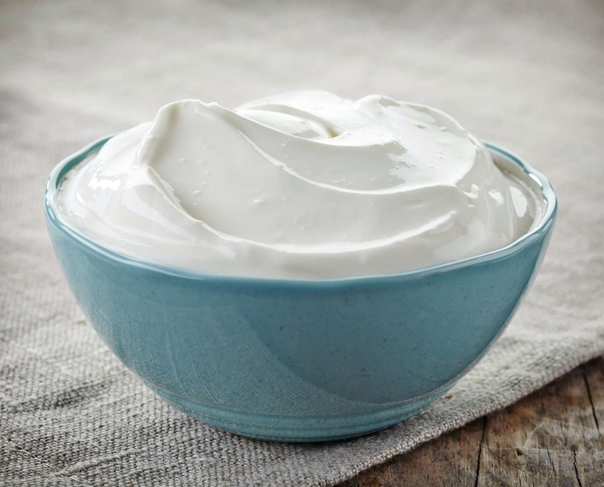

I Love Sour Cream
10/15/2024
Sour cream is possibly one of the greatest inventions ever made. Give me a burrito bowl and I am dousing it in sour cream. If the top layer isn't purely white, I don't want it. Yummers.
I love it so much that I want to teach you more. Enjoy!
Sour cream (sometimes known as soured cream in British English) is a dairy product obtained by fermenting regular cream with certain kinds of lactic acid bacteria.[1] The bacterial culture, which is introduced either deliberately or naturally, sours and thickens the cream. Its name comes from the production of lactic acid by bacterial fermentation, which is called souring. Crème fraîche is one type of sour cream with a high fat content and less sour taste.
Traditionally, sour cream was made by letting cream that was skimmed off the top of milk ferment at a moderate temperature. It can also be prepared by the souring of pasteurized cream with acid-producing bacterial culture.[2] The bacteria that developed during fermentation thickened the cream and made it more acidic, a natural way of preserving it.[3]